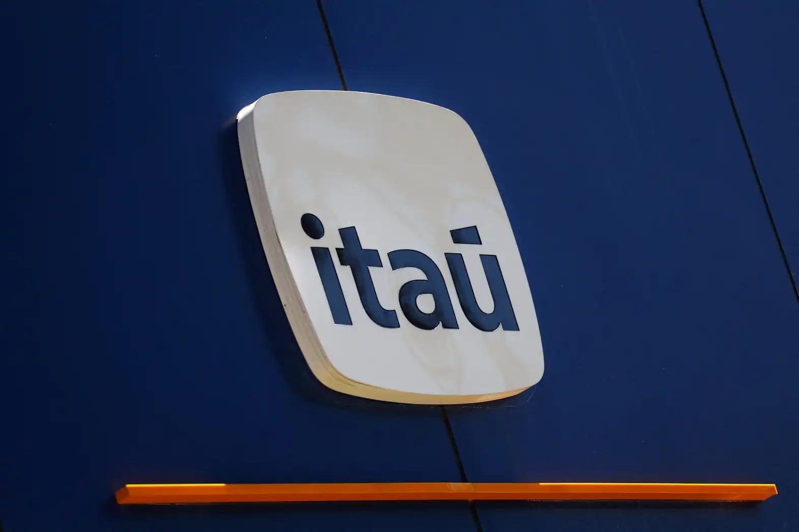

Ações do Itaú crescem mais de 50% em menos de 1 ano
O banco Itaú tem apresentado um crescimento significativo em suas ações, com um aumento de mais de 50% em menos de um ano, impulsionado por estratégias eficazes e resultados financeiros sólidos.